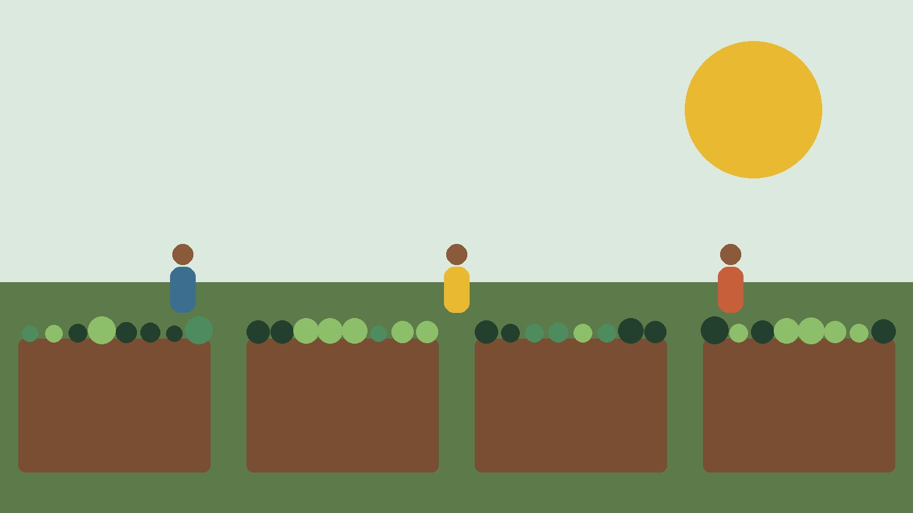
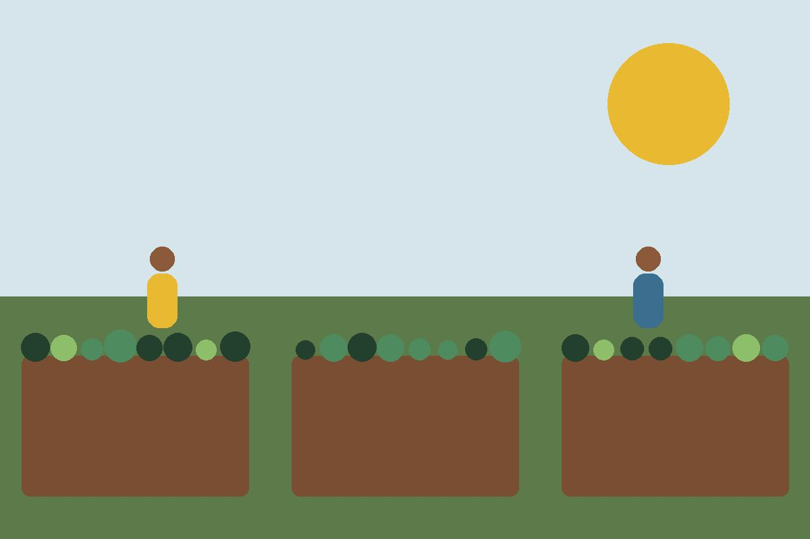

Missão
Garantir acesso a alimento fresco e saudável nas periferias, ocupando espaços ociosos com hortas cuidadas pela própria comunidade.
Desde 2016 transformamos terrenos vazios da zona leste de São Paulo em hortas comunitárias. Quem planta, colhe, e o que sobra vai para a mesa de quem mais precisa.

Garantir acesso a alimento fresco e saudável nas periferias, ocupando espaços ociosos com hortas cuidadas pela própria comunidade.
Ser, até 2030, referência em agricultura urbana comunitária no estado de São Paulo, com uma horta a cada bairro atendido.
Moradores de Guaianases ocupam um terreno abandonado e plantam a primeira horta.
Registro formal como associação sem fins lucrativos e primeira parceria com escola municipal.
Lançamento da Cozinha Comunitária, que transforma a colheita em marmitas durante a pandemia.
Prêmio municipal de agricultura urbana e inauguração do viveiro de mudas.
14 hortas ativas e mais de 1.200 famílias atendidas por ano.

Somos uma associação com assembleia geral, conselho fiscal e uma coordenação executiva de cinco pessoas. Cada horta tem um guardião, morador do bairro, que organiza os mutirões.
Publicamos todo ano o balanço financeiro e o relatório de atividades, aprovados pelo conselho fiscal.
Endereço: Rua das Sementes, 120, Guaianases, São Paulo/SP, CEP 08410-000
Telefone: (11) 2555-0100
WhatsApp: (11) 95555-0100
E-mail: contato@raizesdobairro.org.br
Atendimento: segunda a sábado, das 8h às 17h